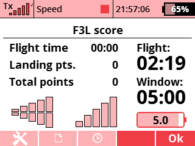

It provides its own timers implemented in Lua, and does not rely on the built-in timers. Therefore, if you want to test the app, it may be a good idea to first make a copy of your model and delete the timers you set up, to avoid duplicate time calls. The timers from the app can also be added to the Main Screen as Displayed Telemetry.
Before using the app, you have to select a switch for starting and stopping the flight timer. If you use a momentary or a push button, then push and release in less than 1 sec. to toggle the timer. If you stop the timer before 10 sec. then the flight does not count. You can change the window and target flight time in the Settings menu.
The app shows the radio signal strength and the receiver voltage. You can select if your flight battery pack is a LiPo pack or a 4S NiMH pack in Settings. You can also set a voltage threshold to give a low battery warning.
Scores can be saved and edited, so you can keep an electronic score card during contests.
This app will be added to the bottom of the Main Menu.
You can download the source code from the SoarJETI GitHub repository.